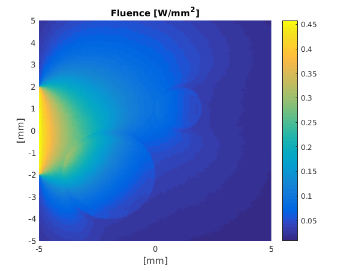

Generating input for the external executable: generatingc.m
Calculations with complex geometries are convenient to perform using the external executable that is compiled from C++ code (see installation instructions). This example shows how the initial conditions can be set up using Matlab and stored to a text file for a parallelized calculation on a computer cluster, for example. The code is identical to the Netgen example, but the computation is done using the external executable.
For this example to work the external executables must be compiled. See the homepage/installation for instructions how to compile the external executales
Contents
clear all;
Perform simulation initialization as in the Netgen example
[vmcmesh regions region_names boundaries boundary_names] = importNetGenMesh('square_with_two_circles.vol', false);
Find indices
indices_for_background = cell2mat(regions(find(strcmp(region_names,'background')))); indices_for_circles = cell2mat(regions(find(strcmp(region_names,'circles')))); indices_for_lightsource = cell2mat(boundaries(find(strcmp(boundary_names,'lightsource'))));
Set optical parameters and light sources using the indices
vmcmedium.absorption_coefficient(indices_for_background) = 0.01; % absorption coefficient [1/mm] vmcmedium.scattering_coefficient(indices_for_background) = 1.3; % scattering coefficient [1/mm] vmcmedium.scattering_anisotropy(indices_for_background) = 0.9; % scattering anisotropy parameter [unitless] vmcmedium.refractive_index(indices_for_background) = 1.3; % refractive index [unitless] vmcmedium.absorption_coefficient(indices_for_circles) = 0.09; vmcmedium.scattering_coefficient(indices_for_circles) = 1.3; vmcmedium.scattering_anisotropy(indices_for_circles) = 0.5; vmcmedium.refractive_index(indices_for_circles) = 1.5; vmcboundary.lightsource(indices_for_lightsource) = {'cosinic'}; vmcoptions.photon_count = 2e6; % set the desired photon count
Save the Monte Carlo simulation input
% Export the input file 'netgen_test_input.txt' exportValoMC('netgen_test_input.txt',vmcmesh, vmcmedium, vmcboundary, vmcoptions);
Run the external executable
The input file is used to launch an external executable using the ! operator in Matlab. Note that the calculation could be done on a computing cluster aswell and no Matlab is needed.
% This assumes the c++ code has been compiled. % In Windows, MC2D.a should be replaced with MC2D.exe !../MC2D netgen_test_input.txt netgen_test_output.txt
ValoMC-2D
--------------------------------------------
Version: v1.0b-118-g853f111
Revision: 131
OpenMP enabled
Using 32 threads
--------------------------------------------
Constants:
f (0.000000e+00)
phase0 (0.000000e+00)
Ne (21597)
Nb (405)
Nr (11002)
Nphoton (2000000)
seed (1550753068)
Arrays:
H (21597x3)
BH (405x2)
r (11002x2)
mua (21597x1)
mus (21597x1)
g (21597x1)
n (21597x1)
BCType (405x1)
BCn (405x1)
BCLightDirection (405x2)
Initializing MC2D
Computing...
1.529150 % 3.166450 % 4.769950 % 6.449250 % 7.465300 % 8.312700 % 9.192650 % 10.052900 % 10.911950 % 11.782750 % 12.659400 % 13.510950 % 14.404700 % 15.300500 % 16.189450 % 17.064500 % 17.945950 % 18.816350 % 19.687750 % 20.572000 % 21.490600 % 22.376350 % 23.232150 % 24.106050 % 25.144700 % 26.022550 % 26.969950 % 27.997750 % 28.884950 % 29.778650 % 30.664100 % 31.560050 % 32.458400 % 33.371300 % 34.246050 % 35.133050 % 36.042450 % 37.073800 % 37.985750 % 38.998100 % 39.904000 % 40.826900 % 41.738900 % 42.630200 % 43.549950 % 44.508550 % 45.434100 % 46.335300 % 47.433650 % 48.328600 % 49.250300 % 50.232100 % 51.150300 % 52.042050 % 52.944500 % 53.879200 % 54.807500 % 55.695750 % 56.554850 % 57.416500 % 58.282850 % 59.146400 % 100.000000 %Saving problem
Computation took 5 seconds
Load the simulation output using importValoMC
importValoMC can be used to retrieve the problem definition and the simulation output from the external executable
[vmcmesh, vmcmedium, vmcboundary, options, solution] = importValoMC('netgen_test_input.txt', 'netgen_test_output.txt'); % Plot the solution hold on; patch('Faces',vmcmesh.H,'Vertices',vmcmesh.r,'FaceVertexCData', solution.element_fluence, 'FaceColor', 'flat', 'EdgeColor', 'none'); xlabel('[mm]'); ylabel('[mm]'); c = colorbar; title('Fluence [W/mm^2]'); hold off